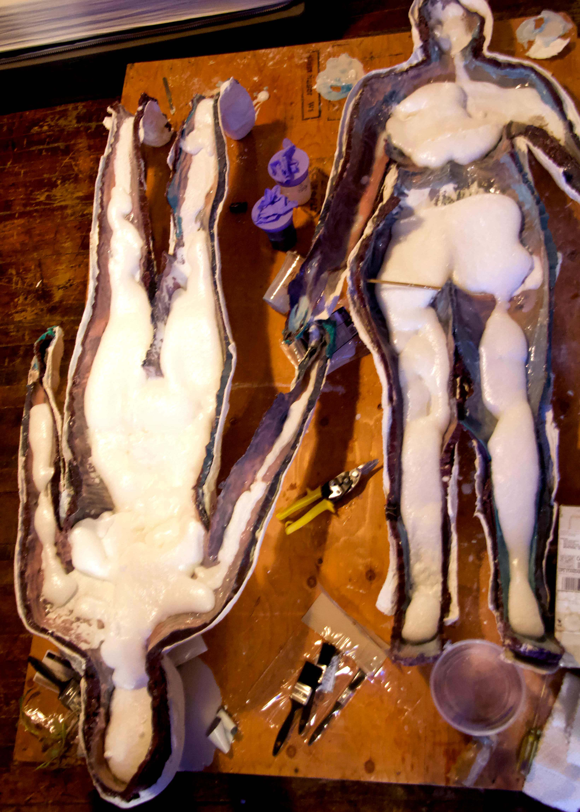
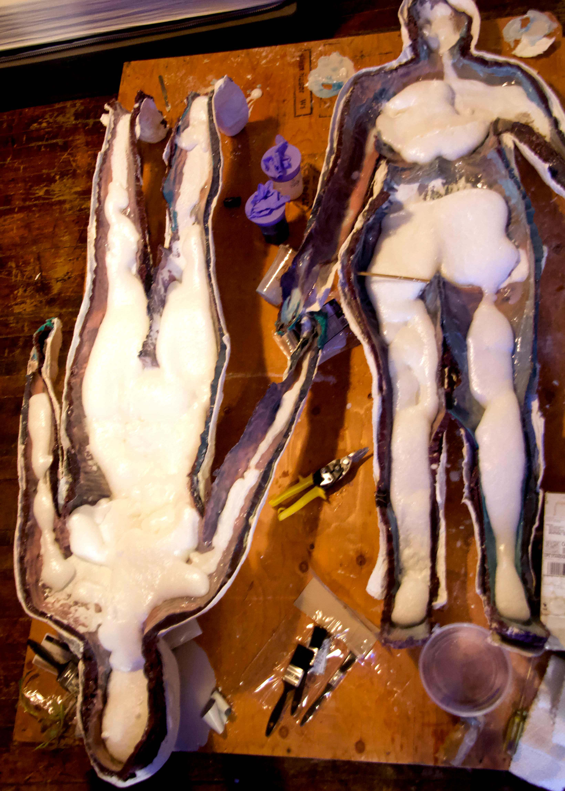

2025
2024
2019
❮


 

❯
full body mold
our most ambitious project to date: an attempt at a full-body cast from head to toe. a learning experience that refined our protocols and allowed us to use, for the first time, a silicone-and-foam casting method. possibly the first fully documented full-body mold (and now we understand why).
model: nada
molding: illiez
technical collaborator: Mayson Rain
technical collaborator: Dayana Matasheva
documentation: Edson Niebla and Dayana Matasheva
supported by the Canada Council for the Arts
molding: illiez
technical collaborator: Mayson Rain
technical collaborator: Dayana Matasheva
documentation: Edson Niebla and Dayana Matasheva
supported by the Canada Council for the Arts
❮


❯
partial body molds
before tackling the full body mold, we created partial body molds, including a head, a torso, a pregnant belly, a leg, and an arm.

soma
our first collaboration (with Marianna Rouche) – where we projection-mapped videos of ourselves over 3D prints of our faces. green paint was used to dissolve, reshuffle, and blur where one body began and ended.